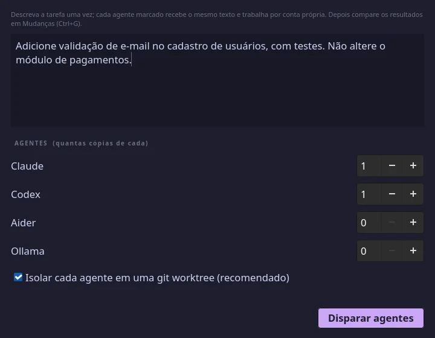

/dev/raid
A “VS Code for terminals” to orchestrate many AI coding agents in parallel. One set of terminals per project, that stays alive when you close the window.

Built for coding with agents
Running three agents at once turns into a mess of tabs and windows. /dev/raid gives each project its own place and lets you watch, approve and control everything from the keyboard.
01Terminals that survive
Each project is a tmux session. Close the app, come back hours later: your agents are still running exactly where you left them.
02Many agents, no conflicts
Open Claude Code, Codex, Aider or Ollama side by side. Each one can get an isolated git worktree on its own branch, so they don't step on each other's work.
03Review what the agent did
The Changes window shows a colored diff of every file, lets you revert a single file and commit — agent worktrees included.
04Keyboard-driven
Ctrl+D opens the actions: open an agent, split a pane, switch layout, change theme. Tiling-WM shortcuts (Alt+arrows, Alt+1…9), all of them remappable.
05Subagents and live status
The agents panel shows who is working, waiting or done — including Claude Code subagents (via hooks) — plus recent commits and GitHub CI.
06Per-project memory and secrets
Searchable markdown notes that feed into new sessions' context. Secrets live in the system keyring: agents only see their names, and you approve every use.
07Remote servers
Projects on a VPS via mosh or ssh, straight from your ~/.ssh/config. tmux runs on the server — the connection drops, the work doesn't.
08Built-in MCP server
Agents themselves can list projects, open other agents, send messages, read a pane's output and use memory and secrets.
09Parallel tasks
Write the task once and send it to Claude, Codex or several copies of the same agent, each in its own worktree. Then compare the results side by side.
10Orchestrator agent
A Claude that breaks down the goal, opens subagents in worktrees over MCP, tracks their progress and hands you the branches to review. It never merges on its own.
11Credits at a glance
Plan usage (5-hour and weekly) for Claude and Codex, credit balance and tokens per project — and the orchestrator uses it to stay within your quota.
12Your look
Themes (Catppuccin, Tokyo Night, Gruvbox, Nord), accent color, font, cursor and shortcuts — all in one Settings window, saved instantly.
13Frictionless GitHub
Lists all your repositories (user and orgs) using the gh you already have. Opening a repo clones it and makes it a project.
14Always up to date
Checks for new versions every few hours and updates itself — or leaves it to your package manager. Your terminals survive the restart. Run devraid update anytime.
Actions in one shortcut
Press Ctrl+D and type. Open an agent (with or without a worktree), a new pane, tab, layout, text zoom, switch project, open settings… All in one searchable list, without leaving the keyboard.
- Arrows and Enter to pick, Esc to close
- Accent-insensitive search
- The shortcut is yours: change it in Settings


See and approve what changed
After an agent works, you want to see the diff before accepting it. The Changes window (Ctrl+G) lists modified files in the main folder and in every agent worktree.
- Colored diff per file
- Revert a single file (with confirmation)
- Commit everything, with your message

One task, many agents
Write it once, choose who works on it and launch. Each agent gets the task in its own worktree and branch; you follow along in the agents panel and compare the results in Changes.
- Claude and Codex side by side, or three Claudes to compare approaches
- Or let an orchestrator split the work and open the subagents
- You review; nothing is merged without your say
Visual settings
Font, text size, color theme, shortcuts and the agent list — all in one window, saved instantly. No config files to edit (though config.toml is there if you prefer).
- Four themes: Catppuccin, Tokyo Night, Gruvbox, Nord
- Shortcut capture: click and press the combination
- Add any CLI as an agent

Install in one line
Linux with GTK4 and VTE. The installer detects your distro (Arch, Fedora, Debian/Ubuntu), installs whatever is missing (asking before sudo) and puts the app in ~/.local, no root required.
curl -fsSL https://kleber-code.github.io/dev-raid/install.sh | shwget -qO- https://kleber-code.github.io/dev-raid/install.sh | shThen: gh auth login, devraid install (registers hooks and MCP in Claude Code and Codex) and devraid to open it.
Running a script from the internet means trusting it: read install.sh first, or pin a version with DEVRAID_REF=v0.2.0. To remove: … | sh -s -- --uninstall.